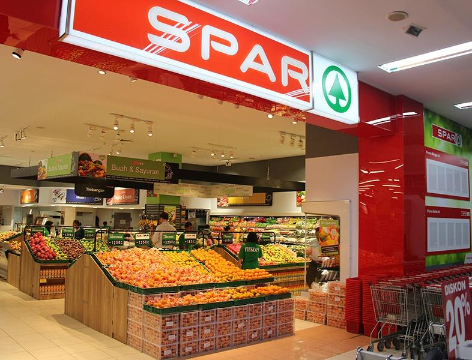

SPAR
SPAR, originally DESPAR, is a Dutch multinational franchise that manages independently owned and operated food retail stores.[1] It was founded in the Netherlands in 1932,[2] by Adriaan van Well, and now consists of more than 13,320 stores in 48 countries. The company's name is an acronym of the slogan "Door Eendrachtig Samenwerken Profiteren Allen Regelmatig", which was used by van Well to describe the brand and translates as "Everyone works better together". Its headquarters are located in Amsterdam. The company operates a partnership programme and has a presence in most European countries, as well as many others throughout Asia, Africa and Oceania. In fiscal year 2019, SPAR achieved €37.1 billion in global sales, which represented a 4.35 percent increase over 2018
Shop types:SPAR shop in Laiwu, China. In most, but not all countries, SPAR operates shops of different types and sub-brands: SPAR Express, SPAR Neighbourhood, EuroSPAR and InterSPAR. InterSPAR shop in Hungary. EuroSPAR/SuperSPAR: The EuroSPAR name is used in Europe and SuperSPAR in South Africa. These are mid-sized supermarkets. They are designed to fit in a niche between convenience shops and traditional supermarkets. InterSPAR: These are hypermarkets and compete directly against major international chains such as Real, Carrefour, and Tesco. KwikSPAR:KwikSPAR (only found in South Africa) are a smaller quick stop shop for convenience. They are larger than the conventional SPAR Express but smaller than the normal SPAR. These stores tend to have extended trading hours, some even being 24-hour convenience stores. SPAR Express: afilling station with a SPAR Express shop in Wattens, Austria This is the smallest type of shop. They are designed for small sites and filling station forecourts, airports and train stations. SPAR Drive-Thru: There was a drive-through SPAR on the Cliftonville Road in Belfast, Northern Ireland. This has now been converted to a Centra shop, and retained the drive-through for a while afterhand, but now no longer has one. SPAR Gourmet The Austrian Spar Group has around 50 supermarkets branded SPAR Gourmet, mainly in and around Vienna. They are smaller supermarkets that specialize in foods, with a reduced range of other household goods. They originate from the acquisition of retail units from the Julius Meinl coffee and tea chain in 2000.
TRADING HOURS: 08AM-9PM
WHERE WILL YOU FIND IT?
SPAR is located on first floor shop No.20
